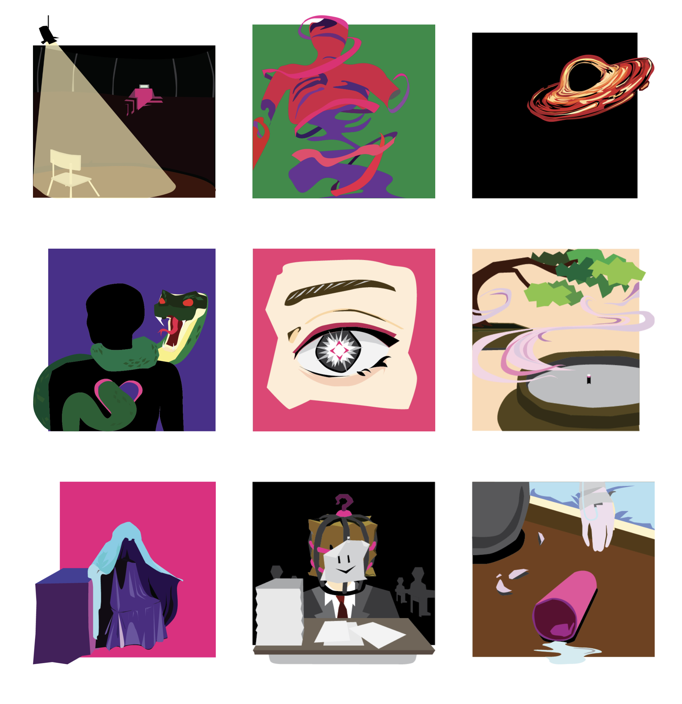

graphic icons
Regarding the topic "empty", I created a set of graphic icons that unify the elements relevant to the topic. By going through the drafts, sketches prototypes, and final projects. After screening out the sketches, some interesting thoughts reflect from the prototypes---- not only empty from the physical aspect but also the mental aspect or regional aspect. Therefore, there are icons of death, mediation, and also greediness. Regarding the concept from religions, death means your anima is gone, and there is only a hollow shell left in the world. I reckon that death is one way that can demonstrate the "empty" theme to many people. Having everything is means having nothing, greediness always impacts people's decisions and this is what called the dark side of humanity. Once people cannot stop pursuing wealth, admiration, and power, they are just the walking dead. Additionally, Buddhism has concepts of egolessness as well. This artwork is aiming to let people thinking the meaning of empty critically, and on top of that, focus on themselves and the thing or people surrounding them.
virtual environment


For this artwork, I build a virtual environment to present a change in my student life. The first scene which has lots of hands and books is a conceptual space design, which uses this unreal scene design to demonstrate my mindset of me in the final semester of senior high. The pressure from examinations provokes students hard to breathe. The next scene shows how music changed the mindset and was a pressure outlet. Following the music, you will move to the second scene which has a retro-style sky and sunset, the car parking at the feet of the hill, and a bench placed on the top of the hill... you can picture that a commuter cannot stand for the pressure of fast-paced city life and job, driving far away from the city to the suburb. Enjoying the sunset peacefully. This artwork uses contrast and comparison between different scenes to demonstrate the dark time during the Chinese students' senior high. Additionally, aiming to let people know the mindset changing because of the music.